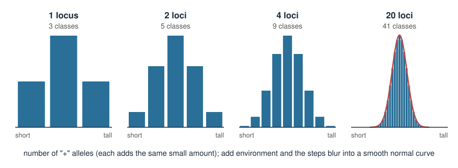
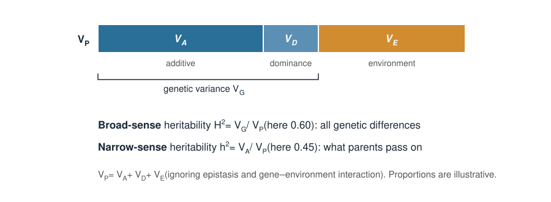
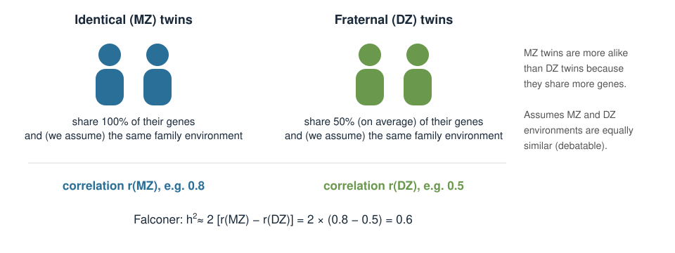
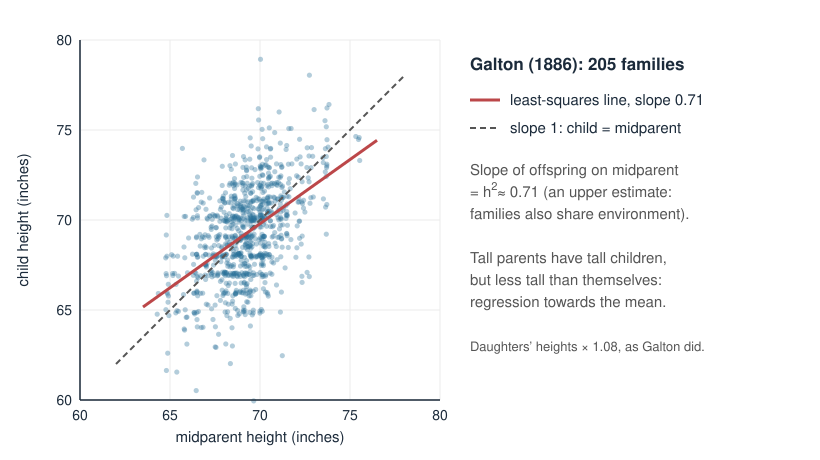
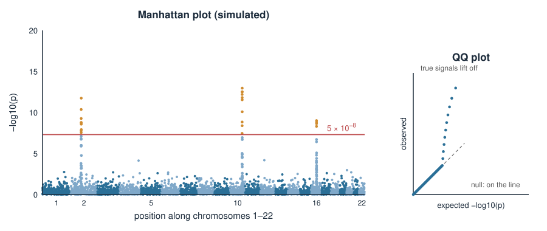

Height, blood pressure and the risk of type 2 diabetes do not fall into Mendel’s neat classes. They vary continuously, and depend on many genes and the environment: they are complex (quantitative, polygenic) traits.
The polygenic model: many loci of small effect give a normal distribution.
Finding the loci: QTL mapping in crosses, and genome-wide association studies (GWAS): association, linkage disequilibrium, 5 × 10⁻⁸, Manhattan and QQ plots.
Polygenic scores and the missing heritability.
Book: Hartwell, the chapter on complex traits. You need χ² and multiple testing (Part 1, Hardy–Weinberg), LOD scores (Part 2) and lm from your data-analysis course.
From Mendel’s classes to a continuous trait

One locus with additive alleles gives 3 classes; k loci give 2k + 1 classes, and their frequencies follow a binomial, which approaches a normal curve.
Add environmental variation and the steps blur: a smooth bell curve, as for height.
This polygenic model (Fisher, 1918) reconciled Mendel’s discrete inheritance with Galton’s continuous variation.
Genes and environment
The phenotype of one person: P = G + E, the sum of a genetic value and an environmental deviation.
Environment here means everything that is not the DNA sequence: nutrition, disease, climate, chance events in development, measurement error.
Height in many countries rose by roughly 10 cm over the 20th century: far too fast for genes, so this is environment (nutrition, health).
Genes and environment can interact: the effect of a genotype may depend on the environment (G × E). Example: PKU is harmful only on a normal diet.
Across a population, we split the variance of P, not one person’s height, into genetic and environmental parts.
Heritability: partitioning the variance

VA, additive variance: the part due to the average effects of alleles. This is what makes children resemble their parents.
VD, dominance variance: interactions between the two alleles at a locus, which are not passed on as such (each parent passes one allele).
Narrow-sense heritability h² = VA/VP predicts the response to selection and the parent–offspring resemblance.
Twin studies

MZ twins share all their genes; DZ twins half, like ordinary siblings. Both share a family environment.
If MZ twins are more alike than DZ twins, the difference reflects genes: Falconer’s formulah² ≈ 2 [r(MZ) − r(DZ)].
Assumption: MZ and DZ twins have equally similar environments. Twins reared apart and adoption studies test it.
Parent–offspring regression

Regress offspring on the midparent (mean of the parents): the slope = h². On one parent, slope = h²/2.
Galton’s 205 families (1886): slope 0.71. Children of tall parents are tall, but less extreme: regression towards the mean, Galton’s original use of the word “regression”.
Shared family environment also makes parents and children alike, so this is an upper estimate of h².
Demo: parent–offspring regression
What heritability does not mean
It is not the fraction of one person’s trait caused by genes. It describes variation in a population.
It is specific to a population and environment. If everyone gets the same good food, VE shrinks and h² rises.
High heritability does not mean unchangeable: height is highly heritable and rose ~10 cm in a century; PKU is genetic and treated with diet.
Heritability within groups says nothing about the cause of differences between groups. (Lewontin: seeds from one sack grown in two fields of different soil.)
h² = 0 does not mean genes are unimportant: the number of fingers has heritability near 0, because almost all variation is accidental.
Finding the loci: QTL mapping
A quantitative trait locus (QTL) is a locus that affects a quantitative trait.
In a cross between two inbred lines (for example a tall and a short strain of mice or maize), the F2 or backcross offspring carry different combinations of the parents’ chromosome segments.
Genotype markers along the genome; for each marker, compare the trait between genotype classes (a t-test or regression).
A marker linked to a QTL shows a difference; unlinked markers do not. The evidence is summarised as a LOD score along the chromosome, as in Part 2 (LOD scores).
QTL mapping needs a cross and gives broad regions (tens of cM). In humans we use association in unrelated people instead.
Genome-wide association studies (GWAS)
Genotype hundreds of thousands to millions of SNPs in thousands of unrelated people. For each SNP, test whether the trait differs between genotypes:
Quantitative trait: regress the trait on the number of copies of the allele (0, 1, 2), with lm.
Disease: compare allele frequencies in cases and controls (a 2 × 2 χ² test, or logistic regression).
Unrelated people share only tiny stretches of chromosome from common ancestors, so association is local: only SNPs in linkage disequilibrium (LD) with a causal variant show a signal.
Linkage disequilibrium: alleles at nearby SNPs are correlated in the population, because they sit on the same ancestral haplotypes that recombination has not yet broken up.
Manhattan and QQ plots

One test per SNP, so about a million tests. At p < 0.05 we would expect ~50 000 false hits. The genome-wide threshold is 5 × 10⁻⁸ ≈ 0.05 / 1 000 000 (a Bonferroni correction for about a million independent tests).
Manhattan plot: −log10 p against position. Causal loci appear as towers: the causal variant and its LD neighbours.
QQ plot: observed against expected −log10 p. Null SNPs follow the line; true signals lift off at the top. If all points lift off, suspect population structure (the Wahlund effect of the Hardy–Weinberg unit) or genotyping errors.
Demo: a simulated GWAS
What GWAS have found
Type 2 diabetes: the strongest association is rs7903146 in an intron of TCF7L2 (10q25). In a 2024 multi-ancestry study of about 2.5 million people (Suzuki et al., Nature), its p-value was about 10⁻¹³¹⁵. Each copy of the risk allele raises the risk only modestly.
The GWAS Catalog lists thousands of T2D associations (KCNQ1, CDKAL1, CDKN2B, FTO, IGF2BP2, …) and tens of thousands for height (GDF5, ZBTB38, LCORL, HMGA2, …).
Most hits are non-coding: they change regulation of nearby genes (Part 6), not protein sequence.
Each variant explains a tiny fraction of the variance: complex traits are truly polygenic.
Polygenic scores and the missing heritability
Polygenic score: add up a person’s risk alleles, each weighted by its GWAS effect size: PGS = Σ βi × (number of risk alleles at SNP i).
Useful for groups (risk stratification, research); weak for individuals: most people with a high score do not get the disease.
Scores built in one ancestry group predict worse in others: allele frequencies and LD differ (drift, previous unit).
Missing heritability: twin and family studies give h² ≈ 0.8 for height, but the first GWAS hits together explained only a few percent. Explanations:
many more loci of tiny effect, below the threshold (larger samples keep finding more);
rare variants that arrays do not capture;
family designs overestimatingh² (shared environment, as in the demo).
Summary
Complex traits: many loci + environment give continuous, normal variation (Fisher’s polygenic model).
Estimates: twins h² ≈ 2[r(MZ) − r(DZ)]; offspring on midparent slope = h² (Galton: 0.71); on one parent slope = h²/2.
Heritability is about variation in one population and environment; it says nothing about individuals or differences between groups.
QTL mapping uses crosses and linkage (LOD); GWAS use association and LD in unrelated people, with p < 5 × 10⁻⁸.
Hits such as TCF7L2 for T2D have small effects; polygenic scores add them up; part of the heritability is still missing.
Where this leads
Ethics module: polygenic scores in embryo selection and insurance, direct-to-consumer genomics, and the misuse of heritability.
Back to Part 6: most GWAS hits sit in regulatory DNA; finding the gene they regulate uses the tools of gene regulation.
In the exercise: heritability by hand, the two demos, the GWAS Catalog for type 2 diabetes and height, and in R: Galton’s families with lm, and a Manhattan plot built from scratch with ggplot2.